Etapa 1
Entrega prevista 2029
Vendida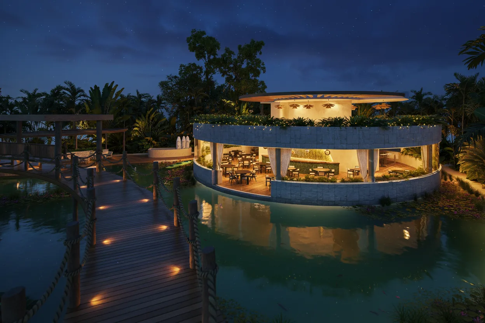
COSTELLA · TELCHAC, YUCATÁN
Algunos buscan el lugar donde quieren vivir, construir y tomar una decisión patrimonial con una visión más amplia.
UNA DECISIÓN DISTINTA
Si buscas dónde construir una vida, preservar espacio y tomar una decisión patrimonial con calma, vale la pena mirar el territorio de otra manera.
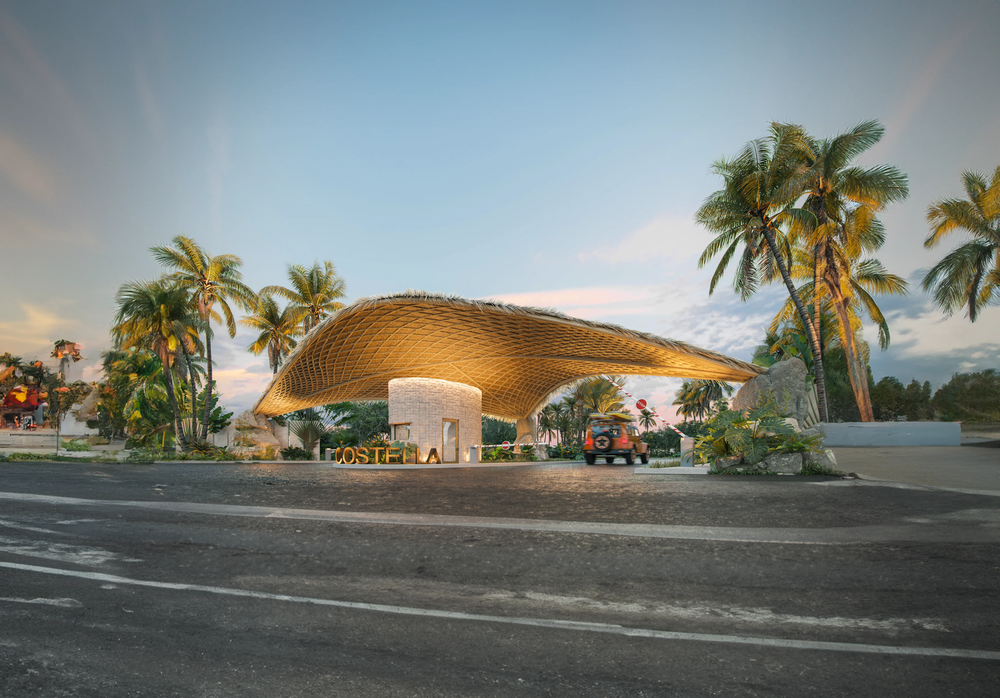
LA PREGUNTA CAMBIA
Costella parte de esa pregunta: ubicación, amplitud, privacidad, infraestructura y espacios que acompañan el tiempo que vas a pasar aquí.
EL TERRITORIO
Costella se encuentra en Telchac Pueblo, conectado con la costa, la naturaleza y destinos que forman parte de la experiencia de Yucatán.
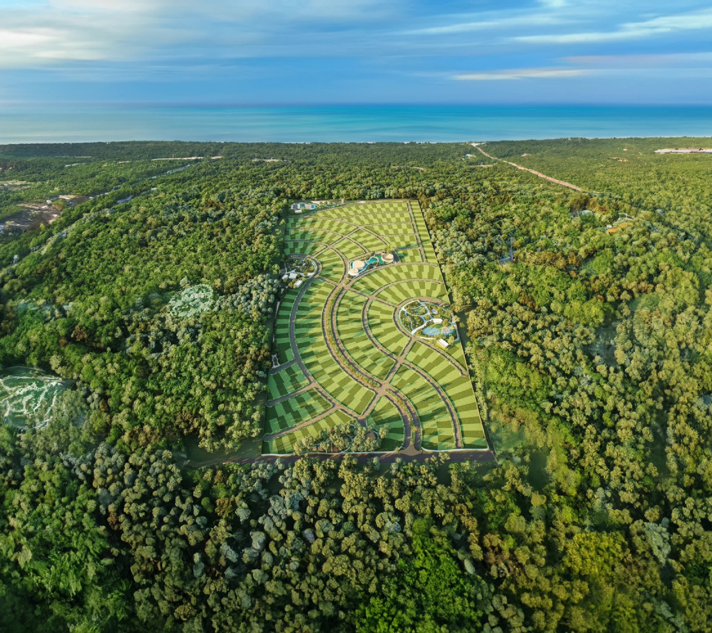
COSTELLA TELCHAC RESIDENCIAL
EL PROYECTO
Urbanizado residencial en régimen condominal, con uso habitacional, áreas verdes y una planeación que prioriza amplitud y privacidad.
UNA PLANEACIÓN COMPLETA
El proyecto distribuye etapas, espacios comunes, áreas verdes y amenidades para crear una experiencia residencial integral.
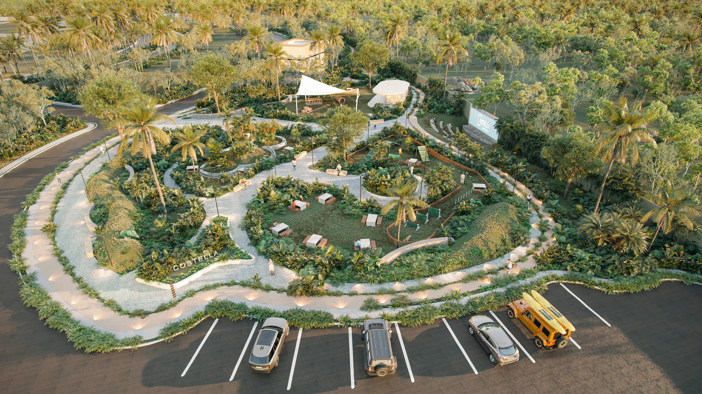
MASTER PLAN
La distribución integra núcleos de amenidades y lotes residenciales dentro de una visión progresiva del desarrollo.
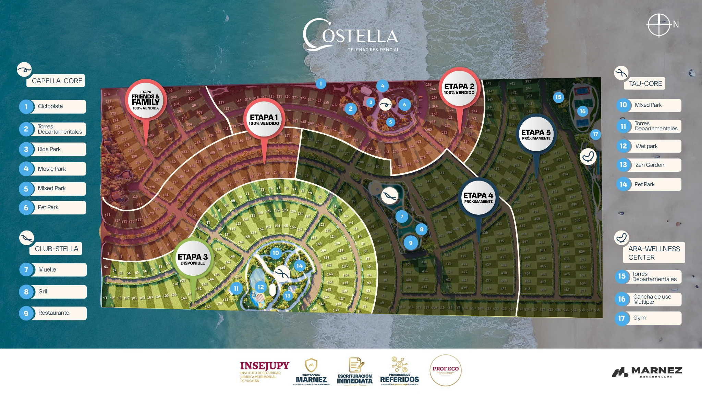
Entrega prevista 2029
VendidaEntrega prevista 2030
VendidaEntrega prevista 2031
DisponiblePróximamente
Club StellaPróximamente
Ara WellnessEL PROYECTO EN MOVIMIENTO
Un recorrido por el entorno, la planeación y la experiencia que propone Costella en la costa yucateca.
TU INVERSIÓN, CON SENTIDO
Condiciones comerciales de referencia para conocer el proyecto y conversar con un asesor sobre disponibilidad vigente.
Las condiciones y disponibilidad pueden cambiar. Confirma la información vigente directamente con un asesor.
MÁS DE 50 AMENIDADES
La experiencia se distribuye en cuatro puntos del desarrollo, vinculando convivencia, bienestar, deporte y naturaleza.
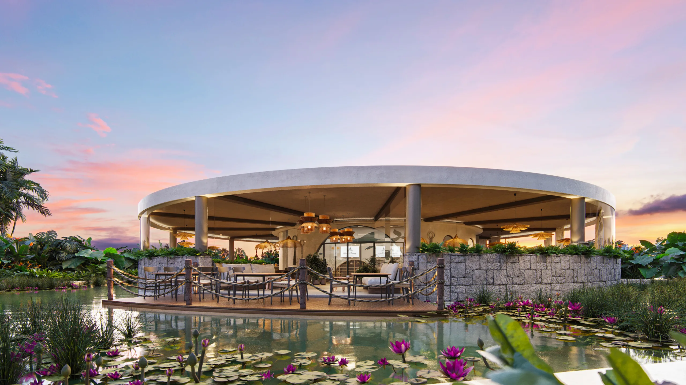
Kids Park · Pet Park · Movie Park · Mixed Park · Ciclopista
Mixed Park · Wet Park · Pet Park · Zen Garden · Ciclopista
Restaurante · Bar · Muelle · Mirador · Cuerpo de agua · Grill · Ciclopista
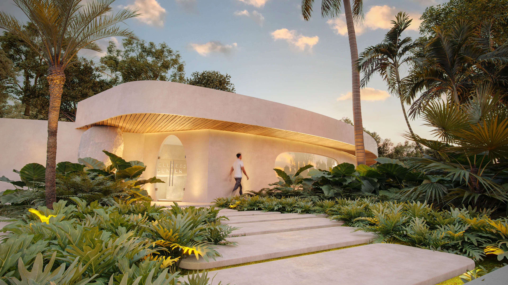
Mini Golf · Gym · Tenis · Pádel · Spa Zen · Canal de Nado · Alberca · Ciclopista
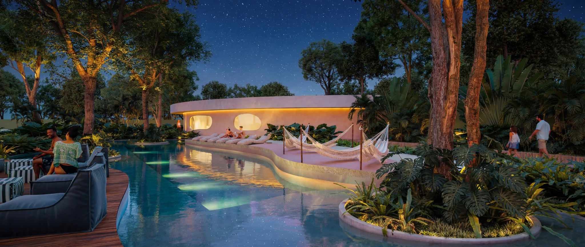
CLUB STELLA
Una casa club pensada para la convivencia, el descanso y los momentos que se quedan. Su cuerpo de agua es de aproximadamente 2,330 m².
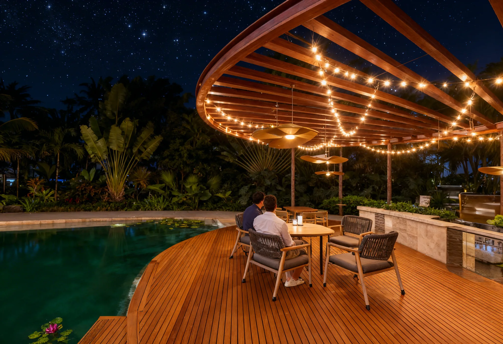
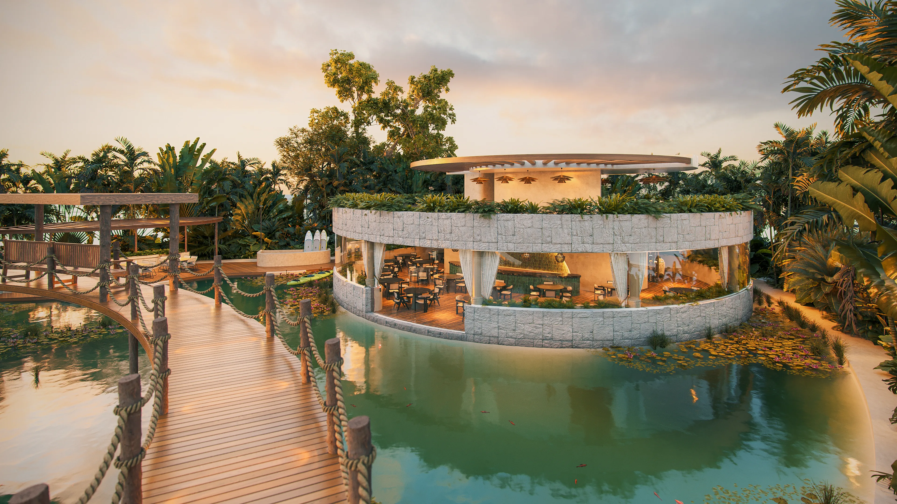
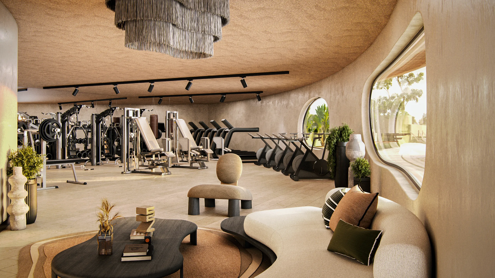
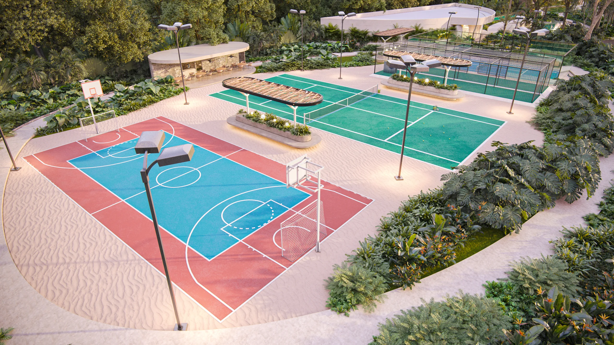
UN BENEFICIO ÚNICO
Vive el mar como parte de tu día a día. Como propietario, tendrás acceso al beneficio de club de playa de acuerdo con las condiciones vigentes.
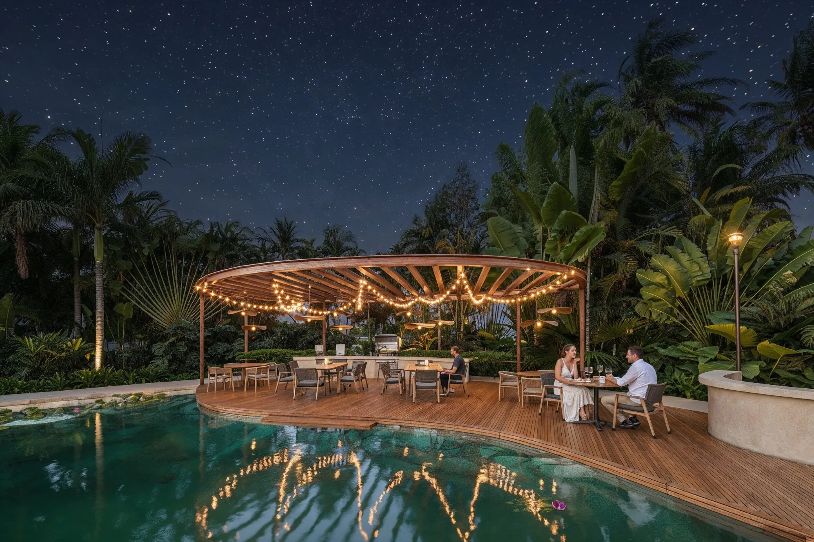
CERTEZA ANTES DE HABLAR DE RETORNO
Información del proyecto, infraestructura y condiciones que conviene conocer antes de tomar una decisión.
El terreno puede escriturarse una vez liquidado, de acuerdo con las condiciones aplicables.
Alumbrado público, luz subterránea, acometida por lote, barda perimetral, drenaje pluvial y paisajismo.
Desarrollo urbanizado residencial en régimen condominal y con uso de suelo habitacional.
La documentación comercial consultada señala adhesión del contrato a PROFECO.
EVOLUCIÓN HISTÓRICA
Valores históricos por m² presentados en material comercial del desarrollo. Se muestran como referencia histórica, no como garantía de valor futuro.
Para conocer precio, disponibilidad y condiciones comerciales vigentes, consulta directamente con un asesor.
PREGUNTAS FRECUENTES
Al municipio de Telchac Pueblo.
533 lotes residenciales.
$5,000 MXN, de acuerdo con la documentación comercial consultada.
La adquisición se realiza con recursos propios o mediante el financiamiento del proyecto.
Etapa 1 en 2029, Etapa 2 en 2030 y Etapa 3 en 2031. Etapas 4 y 5 próximamente, sujetas a comercialización.
Más de 50, distribuidas en Capella Core, Tau Core, Club Stella y Ara Wellness Center.
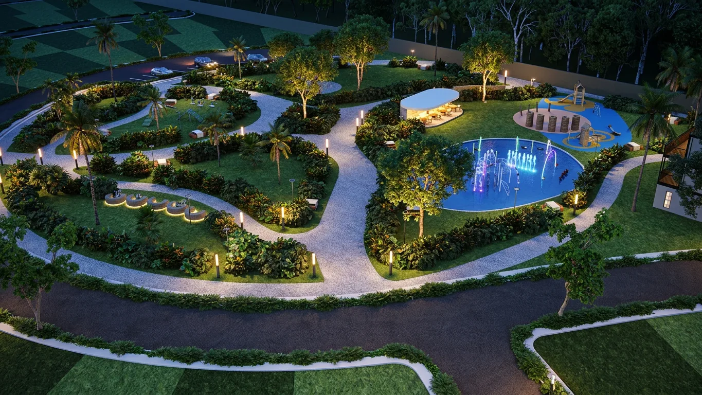
EL MOMENTO ES AHORA
Responde cinco preguntas y descubre cuál es el siguiente paso para ti.